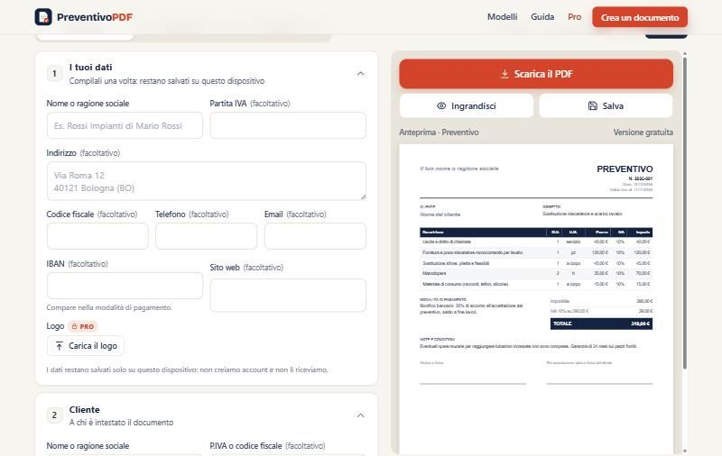
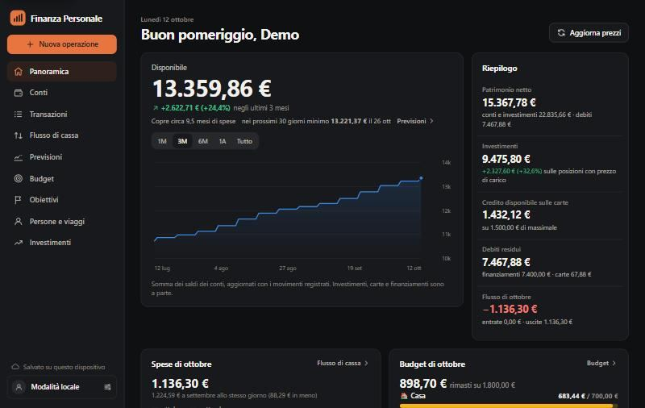
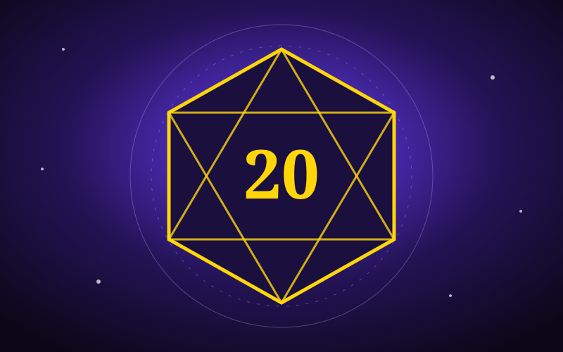

I make things work, from marketing to algorithms.
Marketing and IT by trade, building apps with AI by passion. Here's what I do and what I've built.
I've worked in marketing and IT since the start of my career: brands, campaigns, websites, tools and systems. In recent years I've added AI to how I work and started building real apps, from a personal finance tracker to a PDF quote generator. I like to understand a problem, pick the right tool and make it work.
Projects
Japan 2027
Fourteen nights across Tokyo, Kyoto and Osaka: a scrolling map that draws each day's route and keeps flights, hotels and budget in one place.

PreventivoPDF
Quotes, pro forma invoices and receipts as PDFs in a minute: free, in the browser, no account. Italian tax calculations are built in.

Personal Finance
Accounts, transactions, budgets and investments in one app, with forecasts and goals. This is the demo: made-up data, no login.

Ascension Gate
A Game Master's table: roll the threat level, explore generated maps and dungeon sections, run encounters and manage the bestiary. This is the demo, with a made-up dungeon.
What I do
Got an idea?
If you want to talk about an idea or a project, or just say hello, LinkedIn is the best place to reach me.
Open my LinkedIn profile ↗